import math
from pathlib import Path
import pandas as pd
import numpy as np
from sklearn import preprocessing
from sklearn.decomposition import PCA
from sklearn.cluster import KMeans
from sklearn.mixture import GaussianMixture
from scipy.cluster.hierarchy import linkage, dendrogram, fcluster
from scipy.stats import multivariate_normal
import prince
import matplotlib.pyplot as plt
from matplotlib import cm
from matplotlib.colors import from_levels_and_colors
import seaborn as sns
%matplotlib inlineChapter 7 - Unsupervised Learning
Practical Statistics for Data Scientists (Python)
- 2019 Peter C. Bruce, Andrew Bruce, Peter Gedeck
Import required Python packages.
try:
import common
DATA = common.dataDirectory()
except ImportError:
DATA = Path().resolve() / 'data'Define paths to data sets. If you don’t keep your data in the same directory as the code, adapt the path names.
SP500_DATA_CSV = DATA / 'sp500_data.csv.gz'
SP500_SECTORS_CSV = DATA / 'sp500_sectors.csv'
LOAN_DATA_CSV = DATA / 'loan_data.csv.gz'
HOUSE_TASKS_CSV = DATA / 'housetasks.csv'Principal Components Analysis
A simple example
sp500_px = pd.read_csv(SP500_DATA_CSV, index_col=0)
oil_px = sp500_px[['XOM', 'CVX']]
print(oil_px.head()) XOM CVX
1993-01-29 -0.016991 0.072921
1993-02-01 0.016991 0.102089
1993-02-02 0.084954 0.029168
1993-02-03 0.067964 0.058337
1993-02-04 0.034378 0.044272pcs = PCA(n_components=2)
pcs.fit(oil_px)
loadings = pd.DataFrame(pcs.components_, columns=oil_px.columns)
print(loadings) XOM CVX
0 -0.664711 -0.747101
1 0.747101 -0.664711def abline(slope, intercept, ax):
"""Calculate coordinates of a line based on slope and intercept"""
x_vals = np.array(ax.get_xlim())
return (x_vals, intercept + slope * x_vals)
ax = oil_px.plot.scatter(x='XOM', y='CVX', alpha=0.3, figsize=(4, 4))
ax.set_xlim(-3, 3)
ax.set_ylim(-3, 3)
ax.plot(*abline(loadings.loc[0, 'CVX'] / loadings.loc[0, 'XOM'], 0, ax),
'--', color='C1')
ax.plot(*abline(loadings.loc[1, 'CVX'] / loadings.loc[1, 'XOM'], 0, ax),
'--', color='C1')
plt.tight_layout()
plt.show()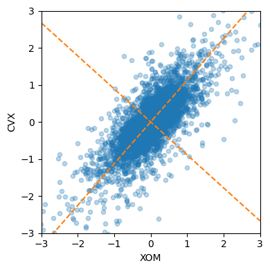
Interpreting principal components
syms = sorted(['AAPL', 'MSFT', 'CSCO', 'INTC', 'CVX', 'XOM', 'SLB', 'COP',
'JPM', 'WFC', 'USB', 'AXP', 'WMT', 'TGT', 'HD', 'COST'])
top_sp = sp500_px.loc[sp500_px.index >= '2011-01-01', syms]
sp_pca = PCA()
sp_pca.fit(top_sp)
explained_variance = pd.DataFrame(sp_pca.explained_variance_)
ax = explained_variance.head(10).plot.bar(legend=False, figsize=(4, 4))
ax.set_xlabel('Component')
plt.tight_layout()
plt.show()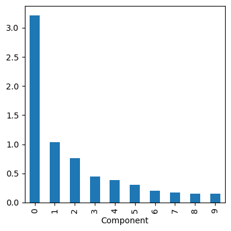
loadings = pd.DataFrame(sp_pca.components_[0:5, :],
columns=top_sp.columns)
print(loadings) AAPL AXP COP COST CSCO CVX HD
0 -0.300825 -0.246332 -0.261529 -0.273634 -0.064059 -0.444490 -0.207983 \
1 -0.505116 -0.139426 0.174212 -0.416307 -0.031939 0.289373 -0.278002
2 -0.786730 0.135458 -0.002367 0.465862 -0.007524 0.082374 0.166320
3 -0.120586 0.061814 -0.206026 0.092596 0.003904 -0.577665 0.162814
4 0.111576 -0.596666 -0.005813 0.555529 -0.039860 0.109016 -0.185488
INTC JPM MSFT SLB TGT USB WFC
0 -0.076956 -0.196397 -0.105012 -0.481786 -0.148833 -0.116421 -0.145684 \
1 -0.033898 -0.040723 -0.053954 0.472494 -0.228123 -0.054796 -0.047427
2 -0.003518 0.062261 0.016248 -0.194822 0.160833 0.048976 0.041932
3 -0.001605 0.057687 -0.012558 0.680914 0.109895 0.016752 0.018614
4 -0.072047 -0.385160 -0.077135 0.181332 -0.055557 -0.155440 -0.216425
WMT XOM
0 -0.122304 -0.317952
1 -0.222889 0.154192
2 0.175806 0.090167
3 0.058439 -0.295204
4 0.091541 0.013277 maxPC = 1.01 * loadings.loc[0:5, :].abs().to_numpy().max()
f, axes = plt.subplots(5, 1, figsize=(5, 5), sharex=True)
for i, ax in enumerate(axes):
pc_loadings = loadings.loc[i, :]
colors = ['C0' if l > 0 else 'C1' for l in pc_loadings]
ax.axhline(color='#888888')
pc_loadings.plot.bar(ax=ax, color=colors)
ax.set_ylabel(f'PC{i+1}')
ax.set_ylim(-maxPC, maxPC)
plt.tight_layout()
plt.show()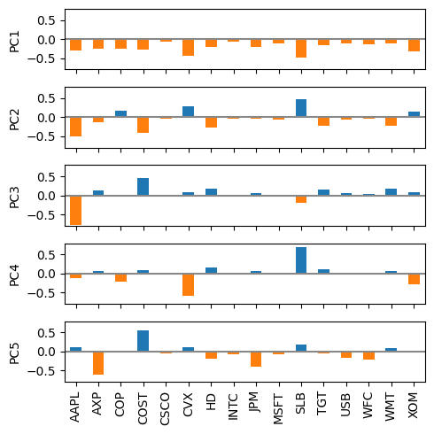
Correspondence analysis
from adjustText import adjust_text
housetasks = pd.read_csv(HOUSE_TASKS_CSV, index_col=0)
ca = prince.CA(n_components=2)
ca = ca.fit(housetasks)
ax = ca.row_coordinates(housetasks).plot.scatter(x=0, y=1, figsize=(6,6))
ca.column_coordinates(housetasks).plot.scatter(x=0, y=1, ax=ax, c='C1')
texts = []
for idx, row in ca.row_coordinates(housetasks).iterrows():
texts.append(plt.text(row[0], row[1], idx))
for idx, row in ca.column_coordinates(housetasks).iterrows():
texts.append(plt.text(row[0], row[1], idx, color='C1'))
adjust_text(texts, only_move={'points':'y', 'texts':'y'})
plt.tight_layout()
plt.show()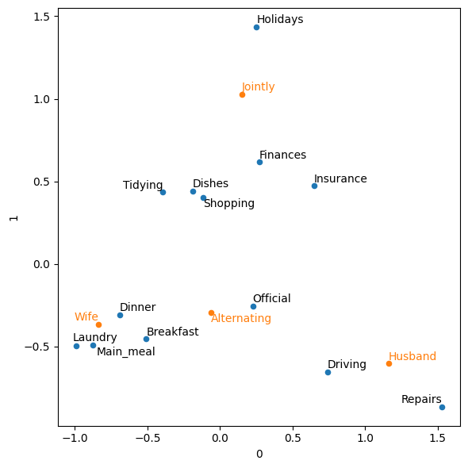
K-Means Clustering
A Simple Example
df = sp500_px.loc[sp500_px.index >= '2011-01-01', ['XOM', 'CVX']]
kmeans = KMeans(n_clusters=4, n_init='auto').fit(df)
df['cluster'] = kmeans.labels_
print(df.head()) XOM CVX cluster
2011-01-03 0.736805 0.240681 3
2011-01-04 0.168668 -0.584516 0
2011-01-05 0.026631 0.446985 3
2011-01-06 0.248558 -0.919751 0
2011-01-07 0.337329 0.180511 3centers = pd.DataFrame(kmeans.cluster_centers_, columns=['XOM', 'CVX'])
print(centers) XOM CVX
0 -0.322102 -0.548787
1 -1.132337 -1.735197
2 0.980343 1.420729
3 0.263669 0.356154fig, ax = plt.subplots(figsize=(4, 4))
ax = sns.scatterplot(x='XOM', y='CVX', hue='cluster', style='cluster',
ax=ax, data=df)
ax.set_xlim(-3, 3)
ax.set_ylim(-3, 3)
centers.plot.scatter(x='XOM', y='CVX', ax=ax, s=50, color='black')
plt.tight_layout()
plt.show()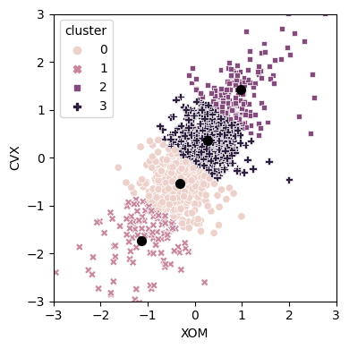
K-Means Algorithm
The scikit-learn algorithm is repeated 10 times by default (n_init), max_iter is used to control the number of iterations.
syms = sorted(['AAPL', 'MSFT', 'CSCO', 'INTC', 'CVX', 'XOM', 'SLB', 'COP',
'JPM', 'WFC', 'USB', 'AXP', 'WMT', 'TGT', 'HD', 'COST'])
top_sp = sp500_px.loc[sp500_px.index >= '2011-01-01', syms]
kmeans = KMeans(n_clusters=5, n_init='auto').fit(top_sp)Interpreting the Clusters
from collections import Counter
print(Counter(kmeans.labels_))Counter({0: 300, 1: 283, 2: 277, 3: 167, 4: 104})centers = pd.DataFrame(kmeans.cluster_centers_, columns=syms)
f, axes = plt.subplots(5, 1, figsize=(5, 6), sharex=True)
for i, ax in enumerate(axes):
center = centers.loc[i, :]
maxPC = 1.01 * np.max(np.max(np.abs(center)))
colors = ['C0' if l > 0 else 'C1' for l in center]
ax.axhline(color='#888888')
center.plot.bar(ax=ax, color=colors)
ax.set_ylabel(f'Cluster {i + 1}')
ax.set_ylim(-maxPC, maxPC)
plt.tight_layout()
plt.show()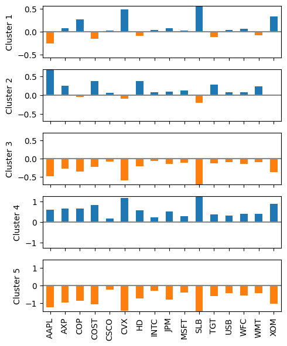
Selecting the Number of Clusters
inertia = []
for n_clusters in range(2, 15):
kmeans = KMeans(n_clusters=n_clusters, random_state=0, n_init='auto').fit(top_sp)
inertia.append(kmeans.inertia_ / n_clusters)
inertias = pd.DataFrame({'n_clusters': range(2, 15), 'inertia': inertia})
ax = inertias.plot(x='n_clusters', y='inertia')
plt.xlabel('Number of clusters(k)')
plt.ylabel('Average Within-Cluster Squared Distances')
plt.ylim((0, 1.1 * inertias.inertia.max()))
ax.legend().set_visible(False)
plt.tight_layout()
plt.show()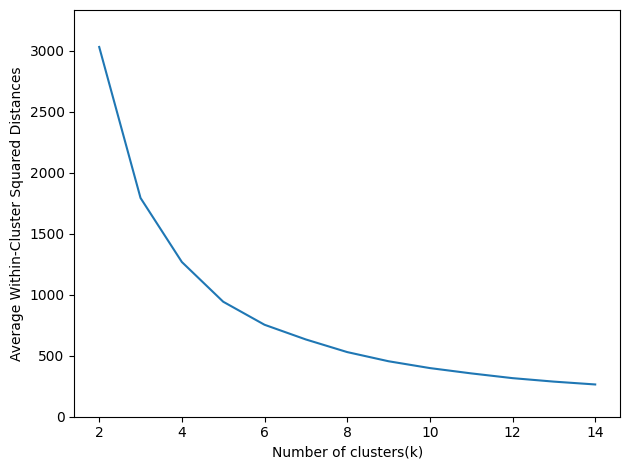
Hierarchical Clustering
A Simple Example
syms1 = ['AAPL', 'AMZN', 'AXP', 'COP', 'COST', 'CSCO', 'CVX', 'GOOGL', 'HD',
'INTC', 'JPM', 'MSFT', 'SLB', 'TGT', 'USB', 'WFC', 'WMT', 'XOM']
df = sp500_px.loc[sp500_px.index >= '2011-01-01', syms1].transpose()
Z = linkage(df, method='complete')
print(Z.shape)(17, 4)The Dendrogram
fig, ax = plt.subplots(figsize=(5, 5))
dendrogram(Z, labels=list(df.index), color_threshold=0)
plt.xticks(rotation=90)
ax.set_ylabel('distance')
plt.tight_layout()
plt.show()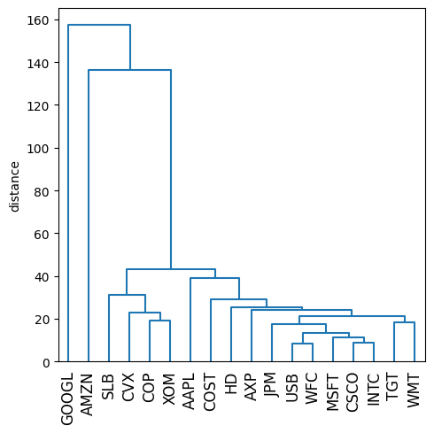
memb = fcluster(Z, 4, criterion='maxclust')
memb = pd.Series(memb, index=df.index)
for key, item in memb.groupby(memb):
print(f"{key} : {', '.join(item.index)}")1 : COP, CVX, SLB, XOM
2 : AAPL, AXP, COST, CSCO, HD, INTC, JPM, MSFT, TGT, USB, WFC, WMT
3 : AMZN
4 : GOOGLMeasures of Dissimilarity
df = sp500_px.loc[sp500_px.index >= '2011-01-01', ['XOM', 'CVX']]
fig, axes = plt.subplots(nrows=2, ncols=2, figsize=(5, 5))
for i, method in enumerate(['single', 'average', 'complete', 'ward']):
ax = axes[i // 2, i % 2]
Z = linkage(df, method=method)
colors = [f'C{c+1}' for c in fcluster(Z, 4, criterion='maxclust')]
ax = sns.scatterplot(x='XOM', y='CVX', hue=colors, style=colors,
size=0.5, ax=ax, data=df, legend=False)
ax.set_xlim(-3, 3)
ax.set_ylim(-3, 3)
ax.set_title(method)
plt.tight_layout()
plt.show()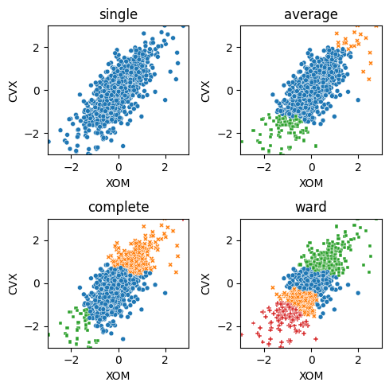
Model based clustering
Multivariate Normal Distribution
Define a colormap that corresponds to the probability levels
mean = [0.5, -0.5]
cov = [[1, 1], [1, 2]]
probability = [.5, .75, .95, .99]
def probLevel(p):
D = 1
return (1 - p) / (2 * math.pi * D)
levels = [probLevel(p) for p in probability]
fig, ax = plt.subplots(figsize=(5, 5))
x, y = np.mgrid[-2.8:3.8:.01, -5:4:.01]
pos = np.empty(x.shape + (2,))
pos[:, :, 0] = x; pos[:, :, 1] = y
rv = multivariate_normal(mean, cov)
CS = ax.contourf(x, y, rv.pdf(pos), cmap=cm.GnBu, levels=50)
ax.contour(CS, levels=levels, colors=['black'])
ax.plot(*mean, color='black', marker='o')
plt.tight_layout()
plt.show()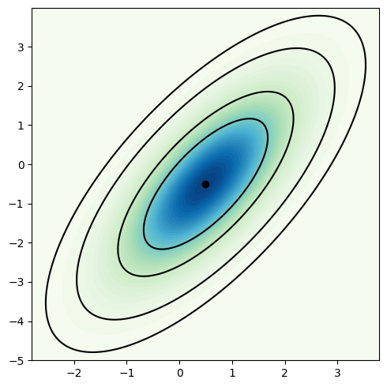
Mixtures of Normals
df = sp500_px.loc[sp500_px.index >= '2011-01-01', ['XOM', 'CVX']]
mclust = GaussianMixture(n_components=2).fit(df)
print(mclust.bic(df))4589.92885731864fig, ax = plt.subplots(figsize=(4, 4))
colors = [f'C{c}' for c in mclust.predict(df)]
df.plot.scatter(x='XOM', y='CVX', c=colors, alpha=0.5, ax=ax)
ax.set_xlim(-3, 3)
ax.set_ylim(-3, 3)
plt.tight_layout()
plt.show()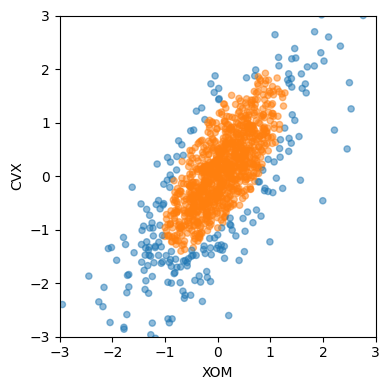
print('Mean')
print(mclust.means_)
print('Covariances')
print(mclust.covariances_)Mean
[[-0.05031426 -0.21161823]
[ 0.07246995 0.10494619]]
Covariances
[[[0.97123064 0.97764343]
[0.97764343 1.67233845]]
[[0.26822676 0.27562091]
[0.27562091 0.51679853]]]Selecting the number of clusters
results = []
covariance_types = ['full', 'tied', 'diag', 'spherical']
for n_components in range(1, 9):
for covariance_type in covariance_types:
mclust = GaussianMixture(n_components = n_components, warm_start=True,
covariance_type = covariance_type)
mclust.fit(df)
results.append({
'bic': mclust.bic(df),
'n_components': n_components,
'covariance_type': covariance_type,
})
results = pd.DataFrame(results)
colors = ['C0', 'C1', 'C2', 'C3']
styles = ['C0-','C1:','C0-.', 'C1--']
fig, ax = plt.subplots(figsize=(4, 4))
for i, covariance_type in enumerate(covariance_types):
subset = results.loc[results.covariance_type == covariance_type, :]
subset.plot(x='n_components', y='bic', ax=ax, label=covariance_type,
kind='line', style=styles[i]) # , color=colors[i])
plt.tight_layout()
plt.show()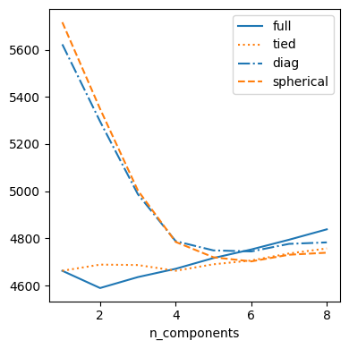
Scaling and Categorical Variables
Scaling the Variables
loan_data = pd.read_csv(LOAN_DATA_CSV)
loan_data['outcome'] = pd.Categorical(loan_data['outcome'],
categories=['paid off', 'default'],
ordered=True)
defaults = loan_data.loc[loan_data['outcome'] == 'default',]
columns = ['loan_amnt', 'annual_inc', 'revol_bal', 'open_acc',
'dti', 'revol_util']
df = defaults[columns]
kmeans = KMeans(n_clusters=4, random_state=1, n_init='auto').fit(df)
counts = Counter(kmeans.labels_)
centers = pd.DataFrame(kmeans.cluster_centers_, columns=columns)
centers['size'] = [counts[i] for i in range(4)]
print(centers) loan_amnt annual_inc revol_bal open_acc dti
0 10274.160906 41241.205530 9950.095008 9.480338 17.718588 \
1 21444.318867 148736.057263 33152.689572 12.376733 13.831145
2 24290.909091 409746.465909 84710.988636 13.431818 8.148636
3 17809.760881 78669.452556 18933.405997 11.594003 17.016428
revol_util size
0 57.903425 13023
1 63.151084 1654
2 60.015647 88
3 62.183810 7906 scaler = preprocessing.StandardScaler()
df0 = scaler.fit_transform(df * 1.0)
kmeans = KMeans(n_clusters=4, random_state=1, n_init='auto').fit(df0)
counts = Counter(kmeans.labels_)
centers = pd.DataFrame(scaler.inverse_transform(kmeans.cluster_centers_),
columns=columns)
centers['size'] = [counts[i] for i in range(4)]
print(centers) loan_amnt annual_inc revol_bal open_acc dti
0 10506.814810 51114.024278 11634.707310 7.509576 15.933778 \
1 10323.453512 53466.038196 6052.642631 8.664617 11.309106
2 25950.205142 116834.142232 32945.972921 12.396335 16.165914
3 13486.397177 55905.907924 16435.679660 14.322746 24.210014
revol_util size
0 77.784329 7399
1 30.990055 5357
2 66.123542 3671
3 59.462324 6244 Dominant Variables
syms = ['GOOGL', 'AMZN', 'AAPL', 'MSFT', 'CSCO', 'INTC', 'CVX', 'XOM',
'SLB', 'COP', 'JPM', 'WFC', 'USB', 'AXP', 'WMT', 'TGT', 'HD', 'COST']
top_sp1 = sp500_px.loc[sp500_px.index >= '2005-01-01', syms]
sp_pca1 = PCA()
sp_pca1.fit(top_sp1)
explained_variance = pd.DataFrame(sp_pca1.explained_variance_)
ax = explained_variance.head(10).plot.bar(legend=False, figsize=(4, 4))
ax.set_xlabel('Component')
plt.tight_layout()
plt.show()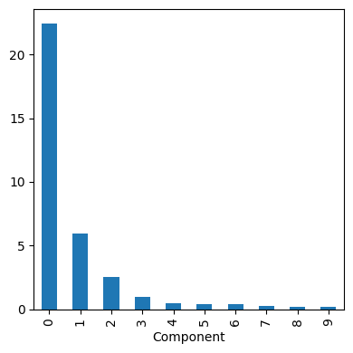
loadings = pd.DataFrame(sp_pca1.components_[0:2, :],
columns=top_sp1.columns)
print(loadings.transpose()) 0 1
GOOGL -0.857310 0.477873
AMZN -0.444728 -0.874149
AAPL -0.071627 -0.020802
MSFT -0.036002 -0.006204
CSCO -0.029205 -0.003045
INTC -0.026666 -0.006069
CVX -0.089548 -0.037420
XOM -0.080336 -0.020511
SLB -0.110218 -0.030356
COP -0.057739 -0.024117
JPM -0.071228 -0.009244
WFC -0.053228 -0.008597
USB -0.041670 -0.005952
AXP -0.078907 -0.024027
WMT -0.040346 -0.007141
TGT -0.063659 -0.024662
HD -0.051412 -0.032922
COST -0.071403 -0.033826Categorical Data and Gower’s Distance
Currently not available in any of the standard packages. However work is in progress to add it to scikit-learn. We will update this notebook once it becomes available
https://github.com/scikit-learn/scikit-learn/pull/9555/
x = defaults[['dti', 'payment_inc_ratio', 'home_', 'purpose_']].loc[0:4, :]
print(x) dti payment_inc_ratio home_ purpose_
0 1.00 2.39320 RENT major_purchase
1 5.55 4.57170 OWN small_business
2 18.08 9.71600 RENT other
3 10.08 12.21520 RENT debt_consolidation
4 7.06 3.90888 RENT other
###############################################################
## Figure 7-13: Categorical data and Gower's distance
x <- loan_data[1:5, c('dti', 'payment_inc_ratio', 'home_', 'purpose_')]
x
daisy(x, metric='gower')
set.seed(301)
df <- loan_data[sample(nrow(loan_data), 250),
c('dti', 'payment_inc_ratio', 'home_', 'purpose_')]
d = daisy(df, metric='gower')
hcl <- hclust(d)
dnd <- as.dendrogram(hcl)
png(filename=file.path(PSDS_PATH, 'figures', 'psds_0713.png'), width = 4, height=4, units='in', res=300)
par(mar=c(0,5,0,0)+.1)
plot(dnd, leaflab='none', ylab='distance')
dev.off()
dnd_cut <- cut(dnd, h=.5)
df[labels(dnd_cut$lower[[1]]),]
## Problems in clustering with mixed data types
df <- model.matrix(~ -1 + dti + payment_inc_ratio + home_ + pub_rec_zero, data=defaults)
df0 <- scale(df)
km0 <- kmeans(df0, centers=4, nstart=10)
centers0 <- scale(km0$centers, center=FALSE, scale=1/attr(df0, 'scaled:scale'))
round(scale(centers0, center=-attr(df0, 'scaled:center'), scale=FALSE), 2)Problems with Clustering Mixed Data
columns = ['dti', 'payment_inc_ratio', 'home_', 'pub_rec_zero']
df = pd.get_dummies(defaults[columns])
scaler = preprocessing.StandardScaler()
df0 = scaler.fit_transform(df * 1.0)
kmeans = KMeans(n_clusters=4, random_state=1, n_init='auto').fit(df0)
centers = pd.DataFrame(scaler.inverse_transform(kmeans.cluster_centers_),
columns=df.columns)
print(centers) dti payment_inc_ratio pub_rec_zero home__MORTGAGE home__OWN
0 16.977575 9.055062 0.921301 1.282308e-14 -1.429412e-15 \
1 17.197993 9.266666 0.917903 -6.661338e-16 1.000000e+00
2 21.796605 11.058379 0.975886 1.000000e+00 -3.885781e-16
3 13.097357 5.778804 0.838922 1.000000e+00 -3.053113e-16
home__RENT
0 1.000000e+00
1 2.053913e-15
2 -3.552714e-15
3 -3.719247e-15